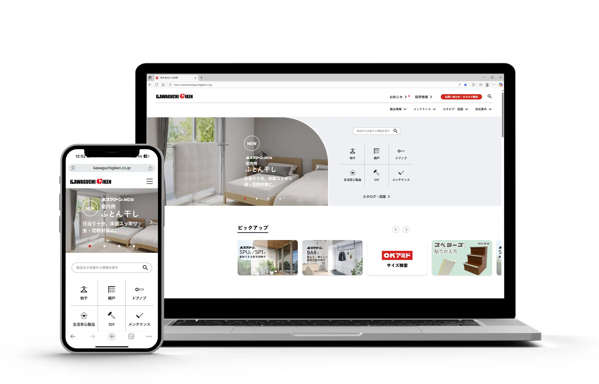
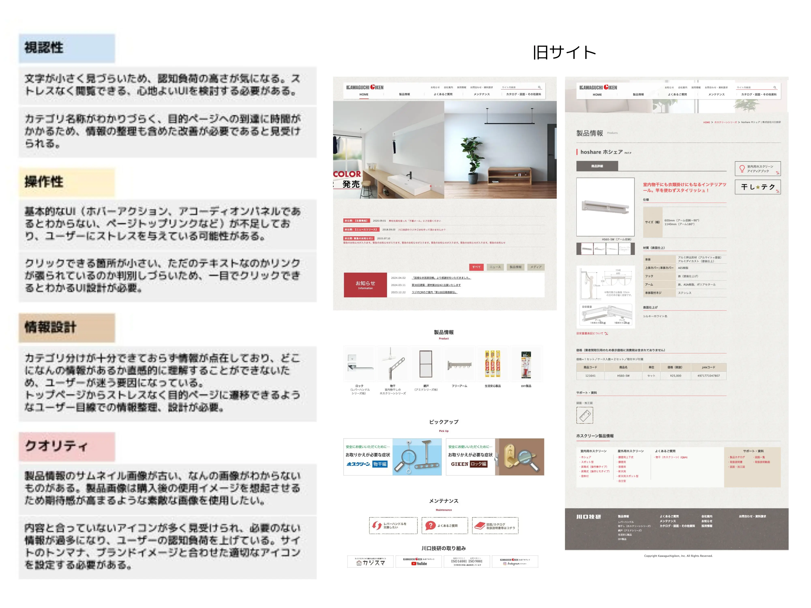
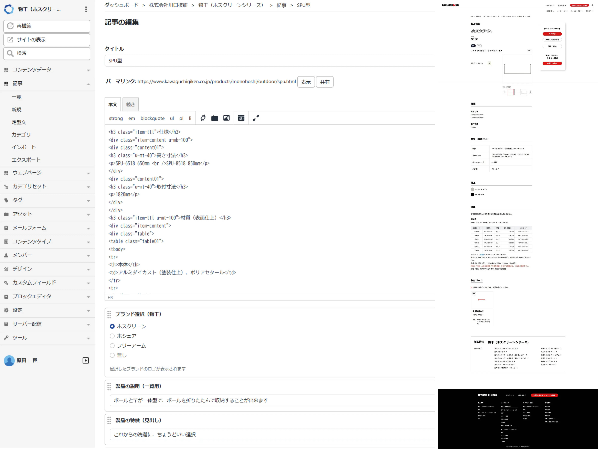

WEB
自社ホームページのリニューアル・運用管理
ディレクション：外部制作会社の選定・進行管理、ワイヤーフレームチェック、要件定義
コンテンツ制作：ユーザーニーズに基づいた製品説明文のライティング、画像制作、情報設計
運用・管理：Movable Type8を用いたコンテンツ更新

概要・課題
住宅設備メーカーとして多種多様な製品を扱う中、旧サイトでは「情報の肥大化による表示速度の低下」と「必要な資料（図面・取説）への辿り着きにくさ」が、ユーザーと社内運用の双方で大きなストレスとなっていました。本プロジェクトでは、①パフォーマンスの根本的改善②検索性の向上③内製運用の効率化を軸に、ＢtoB/BoCの双方の顧客体験を最適化することを目指しました。
こだわり・戦略
パフォーマンス改善：
ユーザーの離脱を防ぐため、表示速度の改善を行いました。また、外部制作会社と連携し、モバイル環境でもストレスのない閲覧体験を目指しました。
検索性改善：
迷わず目的へ到達できる「最適導線」の設計を行い、多忙な業者の皆様や、初めて製品を知る一般消費者の双方が迷わない情報設計を追求しました。需要が最も多い「カタログ・図面・取説」に対し、トップページや製品詳細から迷わずアクセスできるUIを構築。属性によってニーズが異なる「よくある質問」をＢ向け・Ｃ向けでタブ分けし、検索性を高めました。
運用改善：
「運用のしやすさ」を重視し、最新CMS（Movable Type8）への移行と管理画面のカスタマイズを外部制作会社と制作しました。お知らせや製品情報の追加を社内で完結できることで、外部コストの削減と、スピード感のある情報発信体制を構築しました。

